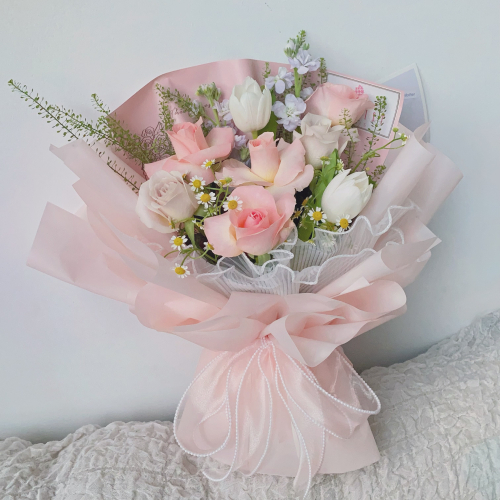

Inspirational life quotes
“All our dreams can come true, if we have the courage to pursue them.”— Walt Disney
“Be the best of whatever you are.” — Martin Luther King, Jr.
“Do anything, but let it produce joy.” — Henry Miller
PSM, KPPIM


Hello! My name is Izzatun Nisa binti Izhab. I am 20 years old, born on
(16th February 2004), and I am currently a final year student at
UiTM Rembau Campus, studying Information Management. I am passionate about learning and have a keen interest in computer programming and language. In my free time, I enjoy playing sports such as
netball, badminton, and volleyball. I also like to watch some YouTube videos during my free time, as they allow me to relax and stay balanced. I come from a close-knit family of 7, and we share a strong bond. My father was a contractor, and my mother is an enforcement of Majlis Perbandaran Hulu Selangor. I have 5 siblings. Growing up, my family instilled in me the values of hard work, kindness, and perseverance, and we’ve always supported one another in our goals. We enjoy spending time together by going on weekend hikes or having movie nights, which keeps us connected and makes for wonderful memories. I look forward to connecting and learning more from others around me and I’m excited to continue expanding my knowledge and to learn from the diverse perspectives of others!

Hello! My name is Izzatun Nisa binti Izhab. I am 20 years old, born on
(16th February 2004), and I am currently a final year student at
UiTM Rembau Campus, studying Information Management. I am passionate about learning and have a keen interest in computer programming and language. In my free time, I enjoy playing sports such as
netball, badminton, and volleyball. I also like to watch some YouTube videos during my free time, as they allow me to relax and stay balanced. I come from a close-knit family of 7, and we share a strong bond. My father was a contractor, and my mother is an enforcement of Majlis Perbandaran Hulu Selangor. I have 5 siblings. Growing up, my family instilled in me the values of hard work, kindness, and perseverance, and we’ve always supported one another in our goals. We enjoy spending time together by going on weekend hikes or having movie nights, which keeps us connected and makes for wonderful memories. I look forward to connecting and learning more from others around me and I’m excited to continue expanding my knowledge and to learn from the diverse perspectives of others!
Back to Top